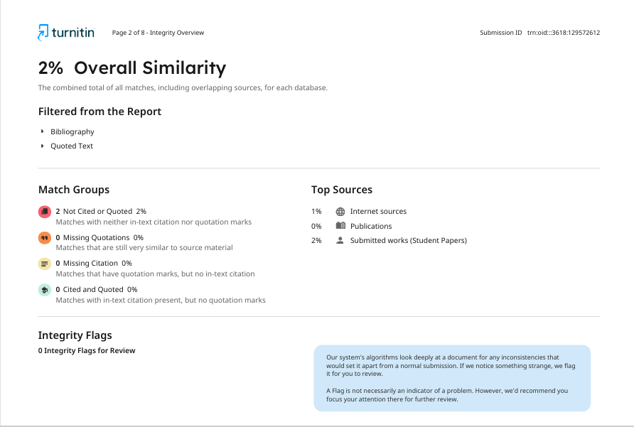

Reflection on Similarity Score and Self‑Assessment
My similarity score for the “Essential skills” summary is now 2%. To keep this low, I will continue to paraphrase carefully, synthesise across multiple high‑quality sources, and use original diagrams/figures. I will also check quotation marks on any direct phrasing and ensure each paragraph includes at least one verified citation mapped to the IEEE‑formatted list below. Using the Generic Assessment Criteria, I would award myself 72% for clarity, structure, relevance, and accurate citation practice, with improvement needed in deeper critical comparison of sources and richer examples from real software projects. Next step: add one worked example linking competencies to a recent code review outcome and update visuals accordingly [1], [2], [3], [4].
